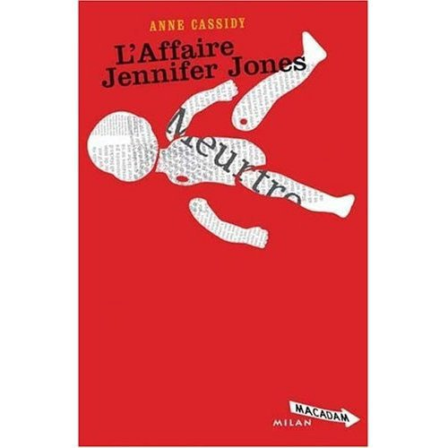
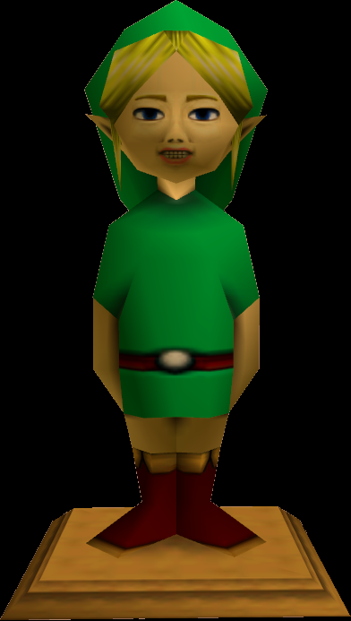
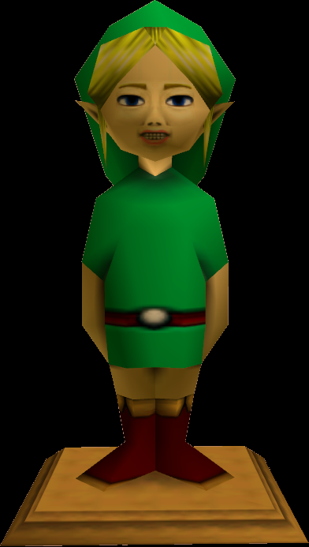

![[ANA JDG] Asterix and the Great Rescue - Megadrive](../vi/6oUXi0ckLmA/default.jpg)
![[ Présentation pour la chaîne Grenier des Joueurs ] JDG Prod](../art/SHAR.6419.583.2.jpg)


Kidpaddleetcie Glin était âgé de 11 ans lorsque notre histoire commença!
Un jour pluvieux d'avril 2007 où les vacances de Pâques offraient du temps libre à tout enfant qui l'avait bien mérité.
Dans un tout petit village,à Namur,en région Wallonne,en Belgique,en Europe,sur Terre et nul par ailleurs,un miracle sans précédent s'accomplit...Glin créa un blog sur Skyrock.com!
Glin,au début,découvrira mais délaissa après quelque jours cette bible encore vierge et sans valeur lorsque sa maman donna l'idée qui fait déborder l'inspiration...
"Pourquoi tu ne parlerais pas de tes BDs?".
Les BDs sont imprégnés de la culture de Glin,il en est friand et malgré le fait qu'il aurait dû y penser après avoir créé le nom de blog "Kidpaddleetcie",Kid Paddle fût sa bd préféré à l'époque,il trouva l'idée tentante!
Le blog servit de répertoire pour ses titres de BDs,sa collection et ses liens avec les collectionneurs de son école en fût augmenter.
Glin apprit,encore une fois(décidément),par sa maman qu'on savait mettre des vidéos dans les articles du blog,un tournant fût engagé.
Direction YouTube,bienvenue dans ce paradis audio-visuelle où chacun et chacune chante,danse,rit et fait des parodie avec la culture populaire.
Nous sommes en 2008,YouTube était riche en couleur,les vidéos soit en 240p soit en 360p et la plupart des vidéos étaient des reprises de chansons,des parodies de scène d'Harry Potter et des podcasts.
KidpaddleetcieGlin
Description :
Le Blog d'une personne aillant découvert internet en 2007 qui partage une partie de sa vie mais surtout ses réflexions, ses découvertes et ses cours!
Bon, je ne vous garantit pas que 100% du contenu est fiable mais aux moins je l'approuve! :)
N'oubliez pas de me retrouver sur les autres sites internet du réseaux KidpaddleetcieGlin retrouvable dans le premier article de chaque page. ^-^
Bon, je ne vous garantit pas que 100% du contenu est fiable mais aux moins je l'approuve! :)
N'oubliez pas de me retrouver sur les autres sites internet du réseaux KidpaddleetcieGlin retrouvable dans le premier article de chaque page. ^-^
Je bosse actuellement pour la chaîne Grenier des Joueurs
Son morceau préféré
Retour au blog de KidpaddleetcieGlin
Deux prostituées vinrent vers le roi et se tinrent devant lui. L'une des femmes dit : " S'il te plaît, Monseigneur !
Moi et cette femme, nous habitons la même maison
Et j'ai eu un enfant alors qu'elle était dans la maison.
Il est arrivé que le troisième jour, après ma délivrance,
Cette femme aussi a eu un enfant.
Nous étions ensemble.
Il n'y avait pas d'étranger dans la maison,
Rien que nous deux dans la maison.
Or le fils de cette femme est mort une nuit
Parce qu'elle s'était couchée sur lui.
Elle se leva au milieu de la nuit,
Prit mon fils d'à côté de moi, pendant que ta servante dormait.
Elle le mit sur son sein et son fils mort elle le mit sur mon sein.
Je me levai pour allaiter mon fils,
Et voici qu'il était mort !
Mais, au matin, je l'examinai,
Et voici que ce n'était pas mon fils que j'avais enfanté ! "
Alors, l'autre femme dit : " Ce n'est pas vrai !
Ton fils est celui qui est mort et mon fils est celui qui est vivant ! "
Moi et cette femme, nous habitons la même maison
Et j'ai eu un enfant alors qu'elle était dans la maison.
Il est arrivé que le troisième jour, après ma délivrance,
Cette femme aussi a eu un enfant.
Nous étions ensemble.
Il n'y avait pas d'étranger dans la maison,
Rien que nous deux dans la maison.
Or le fils de cette femme est mort une nuit
Parce qu'elle s'était couchée sur lui.
Elle se leva au milieu de la nuit,
Prit mon fils d'à côté de moi, pendant que ta servante dormait.
Elle le mit sur son sein et son fils mort elle le mit sur mon sein.
Je me levai pour allaiter mon fils,
Et voici qu'il était mort !
Mais, au matin, je l'examinai,
Et voici que ce n'était pas mon fils que j'avais enfanté ! "
Alors, l'autre femme dit : " Ce n'est pas vrai !
Ton fils est celui qui est mort et mon fils est celui qui est vivant ! "
Elles se disputaient devant le roi qui prononça : " Celle-ci dit : " Voici mon fils et c'est ton fils qui est mort ! "
Celle-là dit : " Ce n'est pas vrai !
Ton fils est celui qui est mort et mon fils est celui qui est vivant ! "
" Apportez-moi une épée, " ordonne le roi.
Et on apporta l'épée devant le roi, qui dit :
" Partagez l'enfant vivant en deux
et donnez la moitié à l'une et la moitié à l'autre. "
Alors la femme dont le fils était vivant s'adressa au roi,
Car sa pitié s'était enflammée pour son fils et elle dit :
" S'il te plaît Monseigneur !
qu'on lui donne l'enfant, qu'on ne le tue pas ! "
Mais celle-là disait :
" Il ne sera ni à moi ni à toi, partagez ! "
Celle-là dit : " Ce n'est pas vrai !
Ton fils est celui qui est mort et mon fils est celui qui est vivant ! "
" Apportez-moi une épée, " ordonne le roi.
Et on apporta l'épée devant le roi, qui dit :
" Partagez l'enfant vivant en deux
et donnez la moitié à l'une et la moitié à l'autre. "
Alors la femme dont le fils était vivant s'adressa au roi,
Car sa pitié s'était enflammée pour son fils et elle dit :
" S'il te plaît Monseigneur !
qu'on lui donne l'enfant, qu'on ne le tue pas ! "
Mais celle-là disait :
" Il ne sera ni à moi ni à toi, partagez ! "
Alors le roi prit la parole et dit : " Donnez l'enfant à la première, ne le tuez pas.
C'est elle la mère ! "
Tout Israël apprit le jugement qu'avait rendu le roi.
Ils révérèrent le roi car ils virent
Qu'il y avait en lui une sagesse divine pour rendre la justice.
(Bible de Jérusalem, I Rois, 3, 16-28))
C'est elle la mère ! "
Tout Israël apprit le jugement qu'avait rendu le roi.
Ils révérèrent le roi car ils virent
Qu'il y avait en lui une sagesse divine pour rendre la justice.
(Bible de Jérusalem, I Rois, 3, 16-28))
Comment trouvez-vous cette histoire que j'ai copier-coller de ce site:
Tout sur cette histoire qui démontre encore une fois la débilité des enfants sur internet et le manque de sécurité parentale!
Voici des liens car je ne peux pas en parler (c'est dangereux pour moi):
http://www.20minutes.fr/web/586189-Web-Jessi-Slaughter-toute-l-histoire-de-l-ado-qui-enflamme-les-Etats-Unis.php
http://www.01net.com/editorial/519272/jessi-slaughter-11-ans-star-dinternet-malgre-elle/
http://www.maplefrance.net/t12298-jessie-slaughter-l-experice-d-une-fille-typique-de-l-internet
Le dernier lien me semble plus intéressant pour son aspect de forum qui amène plusieurs opinions,plusieurs expériences (anecdotes) et qui vous ramènes à vous faire votre opinion!
Tirez-en des conclusions,mes amis! ;)
Il était une fois,un royaume enchanté où les lois et les habitants étaient sous l'influence d'un grand sorcier couronné roi suite à la conquête du royaume dix ans après que la guerre entre les Torotons et les Sonatrons débute pour des raisons de taille et de financement de leurs territoires.
Jadis,un héros a périt dans les flammes alors qu'il voulait mettre fin au règne du grand tyrannique sorcier,ce héros était un villageois qui voulait la paix et du repos,un brave homme fatigué de 20 ans,un homme qui était si fort mais qui n'avait eût aucune chance contre la magie de son roi!
C'est dans une petite chaumière,au sud du royaume,que le destin de deux jeunes gens de race différente fût le plus beau de tout les bébés,un bambin tout rose et aux yeux bleus,ce bambin sera nommer "Glin".
Glin reçu tout les soins nécessaire à sa croissance:une alimentation fait de produit laitier,de chevreuil,de fruit et de légumes frais du potager.
Pendant des années,ses parents elfe et nain se sont donné le défi de le pouponner jusqu'à ses 16 ans.
Notre héro fête ses 16 ans,gros gâteaux à la carotte et aux pommes ainsi que cacao chaud sont au rendez-vous:
-Joyeux anniversaire Glin!; Chantonnèrent les géniteurs du fêté.
-Merci,merci!; Glin les embrasse sur la joue.
-Ton cadeau est caché,à toi de le trouver!; Dit le père d'un ton rieur.
-Sous mon lit!; Soupira Glin
-Évidemment car c'est un cadeau de taille!; Rétorqua la mère en souriant.
Glin accourût vers son lit et glissa sa main sous la planche qui soutient le matelas:
-Une épée! ; Cria Glin en ramenant l'objet et son fourreau dans la salle à manger.
-Oui,sa fait longtemps que nous nous préparons à ce moment! ; Répondit le père en désignent la lame avec sa cuillère.
-Tu es au courant que nous sommes en danger depuis plus de 25 ans?
-Je suis au courant mais je ne me suis jamais défendu de la sorte,quand vais-je m'initier à la pratique de l'épée?
-Cette après-midi,ta mère manie très bien les armes elfiques!
-Oui,ton père avait opté pour une hache mais je lui ai dit qu'il valait mieux manier la légèreté avant les armes lourdes!
-Ce n'est pas vraiment ça qui m'a convaincu mais bon!; Soupira le nain.
-Va te laver et t'habiller,il fait froid aujourd'hui!
-J'y cours! ; Glin se dirige vers la salle de bain.
-Rase aussi ta moustache,tu n'as pas encore 18 ans on plus!
-Oui,oui!; Répondit Glin en levant les yeux en l'air!
Jadis,un héros a périt dans les flammes alors qu'il voulait mettre fin au règne du grand tyrannique sorcier,ce héros était un villageois qui voulait la paix et du repos,un brave homme fatigué de 20 ans,un homme qui était si fort mais qui n'avait eût aucune chance contre la magie de son roi!
C'est dans une petite chaumière,au sud du royaume,que le destin de deux jeunes gens de race différente fût le plus beau de tout les bébés,un bambin tout rose et aux yeux bleus,ce bambin sera nommer "Glin".
Glin reçu tout les soins nécessaire à sa croissance:une alimentation fait de produit laitier,de chevreuil,de fruit et de légumes frais du potager.
Pendant des années,ses parents elfe et nain se sont donné le défi de le pouponner jusqu'à ses 16 ans.
Notre héro fête ses 16 ans,gros gâteaux à la carotte et aux pommes ainsi que cacao chaud sont au rendez-vous:
-Joyeux anniversaire Glin!; Chantonnèrent les géniteurs du fêté.
-Merci,merci!; Glin les embrasse sur la joue.
-Ton cadeau est caché,à toi de le trouver!; Dit le père d'un ton rieur.
-Sous mon lit!; Soupira Glin
-Évidemment car c'est un cadeau de taille!; Rétorqua la mère en souriant.
Glin accourût vers son lit et glissa sa main sous la planche qui soutient le matelas:
-Une épée! ; Cria Glin en ramenant l'objet et son fourreau dans la salle à manger.
-Oui,sa fait longtemps que nous nous préparons à ce moment! ; Répondit le père en désignent la lame avec sa cuillère.
-Tu es au courant que nous sommes en danger depuis plus de 25 ans?
-Je suis au courant mais je ne me suis jamais défendu de la sorte,quand vais-je m'initier à la pratique de l'épée?
-Cette après-midi,ta mère manie très bien les armes elfiques!
-Oui,ton père avait opté pour une hache mais je lui ai dit qu'il valait mieux manier la légèreté avant les armes lourdes!
-Ce n'est pas vraiment ça qui m'a convaincu mais bon!; Soupira le nain.
-Va te laver et t'habiller,il fait froid aujourd'hui!
-J'y cours! ; Glin se dirige vers la salle de bain.
-Rase aussi ta moustache,tu n'as pas encore 18 ans on plus!
-Oui,oui!; Répondit Glin en levant les yeux en l'air!
FIN DU PREMIER CHAPITRE
Voici le lien de la playlist:
http://www.youtube.com/playlist?list=PLJ5a_ju6QZ8zb3Wp0ESTcEM8t84vJTmsb
L'aventure de Link par Licanka (version Glin) [Flipnote]
Une mini-série faites de Flipnote par Licanka =)
via : www.youtube.com
Je faisait mon petit tour quotidien sur la toile quand je suis allé sur RTL.be,
j'ai regarder l'actualité et j'ai trouvé une anecdote assez marrante:
J'ai trop rigolé car moi,je n'entend pas la phrase vulgaire!
Cette bonne femme à juste eu envie de porter plainte pour un truc qu'on ne sait pas très bien prouver (comme l'affaire DSK)!
Elles s'attaquent aux grandes entreprises et demande toujours réparation ^^
N'est-ce pas maladroit ^^?
j'ai regarder l'actualité et j'ai trouvé une anecdote assez marrante:
Bobby, le petit chien indigne une maman - Vidéo - RTL Vidéos
Cette habitante de Jemelle accuse ce jouet chantant d'avoir mis le verbe grossier niquer dans la bouche de son enfant.
via : www.rtl.be
J'ai trop rigolé car moi,je n'entend pas la phrase vulgaire!
Cette bonne femme à juste eu envie de porter plainte pour un truc qu'on ne sait pas très bien prouver (comme l'affaire DSK)!
Elles s'attaquent aux grandes entreprises et demande toujours réparation ^^
N'est-ce pas maladroit ^^?
Un chien en plastique qui chante avec un vocabulaire osé - Vidéo - RTL Vidéos
Une mère de famille, qui a acheté dans un magasin de jouets de Marche-en-Famenne, un chien en plastique qui chante en deux langues, s'est rendu compte que la version française était un peu osée.
via : www.rtl.be
J'ai du lire un roman pour le collège!!!
Un livre qui te mets le passé après le présent et le future par la suite!
C'est un roman pour les adolescents (jeunes adultes) qui va vous conter l'histoire d'une criminelle qui a tué une petite fille de son age à l'age de 10 ans! (Oui,on peut tuer à 10 ans)!
Un livre qui te mets le passé après le présent et le future par la suite!
C'est un roman pour les adolescents (jeunes adultes) qui va vous conter l'histoire d'une criminelle qui a tué une petite fille de son age à l'age de 10 ans! (Oui,on peut tuer à 10 ans)!
Voici la couverture
Le roman parleras surtout de la vie d'après d'une criminelle face aux journaux (les médias)!
Mon avis:
Ce roman est un calvaire temporelle,tout y est pour nous faire confondre le présent et le future (des flash-back,des chapitres sur l'événement qu'est le meurtre,...)!
Ce roman m'a fait surtout goûter aux joies de la gente féminine en terme de accompagnement social!
On passe de plusieurs nom et prénom pour une seule personne (Jennifer Jones,la criminelle)!
J'ai bien aimé car le rythme est fluide mais le roman perd en éclat vers la fin où elle est obligé de fuir (encore une fois) les médias,ce qui créer une boucle!
Je le conseille à tout ceux qui ont déjà eu affaire à ce genre de concept mais dans les séries télévisuelles!
Voila!
Connaissez-vous la légende de Ben? Non?
Bon,voici un petit résumé de cette légende urbaine chipé d'un site parlant de cette légende :
" un jeune homme qui trouve une édition hantée de The Legend of Zelda : Majora's Mask. Cela vaut le coup d'½il !
Le jeune homme en question, que l'on appellera JC, est étudiant et a fait l'acquisition d'une 64 et de Super Smash Bros pour y jouer chez lui. Un jour, alors que les habitants proches du campus font des vides-greniers, JC trouve ça et là de vieux jeux vidéo et s'arrète devant l'étalage d'un vieux monsieur, aveugle d'un ½il. Avec peine, JC demanda s'il disposait de vieux jeux, l'homme répondit qu'il ne savait pas et s'absenta. L'étudiant a alors jeté un ½il sur les tableaux et dessins grossiers paressant étrangement familiers car évoquant l'univers Zelda. L'homme revint alors avec une cartouche grise avec marqué "Majora's Mask" au feutre et l'offre au jeune homme avant de murmurer "GoodBye then".
Content de ses achats, JC rentre chez lui et met en route Majora's Mask. Il y a déjà une sauvegarde dessus nommée BEN (proche de la fin), dès lors JC se demande s'il n'a pas entendu "Goodbye Ben". Il commença une nouvelle sauvegarde et note des phénomènes bizarres comme des flashs ou des textures manquantes, mais rien de bloquant. Seulement, de plus en plus, au lieu d'être appelé "Link", de plus en plus de personnages l'appellent "BEN". Excédé, JC finira par supprimer la vieille sauvegarde, mais ne retrouvera même plus son propre nom dans les dialogues (et là cela devient glauque).
Désirant tirer parti du bug du "4ème Jour", JC se trouvera téléporté directement face à Skull Kid (???) avant de se faire brûler vif. De même, notre pauvre joueur se retrouvera bloqué dans Clock Town, les portes ne menant pas ailleurs, avec la même mélodie ne cessant de se répéter. JC tentera finalement de se téléporter avec l'ocarina. Et c'est là que commencera véritablement le calvaire du joueur, car non seulement des dialogues étranges apparaissent à l'écran, mais la sauvegarde de BEN est réapparue et celle de JC s'appelle désormais "YourTurn". Et cerise sur le gâteau, une statue flippante de Link suit la victime en jouant sur les angles de la caméra...
JC a donc posté des captures vidéo montrant la chose en action. Seulement, depuis qu'il a fait partager cette découverte, il s'avérerait que Ben, l'ancien propriétaire, lui parle sur son ordinateur en passant par un programme d'AI, le PC étant relié à la 64 pour les captures. Ben semble également jouer avec ces nerfs en plein jeu, car JC n'arrivera pas à le finir. D'autant plus que certains personnages dont Link seront victimes de mouvements désarticulés. Et toujours cette statue qui apparaît, même sur le PC du joueur (???)."
En outre,la cartouche parait hantée...LOL!
Moi,en tant que blogueur et grand lecteur de truc aussi étrange (ça me passionne),j'ai mené ma petite enquête!
Je pense qu'il est tout à fait possible de hacker un jeux-vidéos de cette âge la!
La Nintendo 64 n'est pas une console de génération si lointaine!
Elle n'a que 2 générations de différence par rapport à la WII!
Il est donc probable que la "rom" a été bidouiller par un petit malin qui voulait montrer se qu'il valait! :)
Mais soupçons se sont confirmés en regardant les vidéos qui proviennent de la chaîne du mec à l'origine de cette légende!
Voici Maintenant les vidéos-captures qui prouvent que le jeux est hanté ^^
Le mec,il joue avec les éléments du jeu! ^^
Je trouve que c'est flippant (la statue qui apparaît quand on joue le thème de Zelda à l'envers)!

Bon,voici un petit résumé de cette légende urbaine chipé d'un site parlant de cette légende :
" un jeune homme qui trouve une édition hantée de The Legend of Zelda : Majora's Mask. Cela vaut le coup d'½il !
Le jeune homme en question, que l'on appellera JC, est étudiant et a fait l'acquisition d'une 64 et de Super Smash Bros pour y jouer chez lui. Un jour, alors que les habitants proches du campus font des vides-greniers, JC trouve ça et là de vieux jeux vidéo et s'arrète devant l'étalage d'un vieux monsieur, aveugle d'un ½il. Avec peine, JC demanda s'il disposait de vieux jeux, l'homme répondit qu'il ne savait pas et s'absenta. L'étudiant a alors jeté un ½il sur les tableaux et dessins grossiers paressant étrangement familiers car évoquant l'univers Zelda. L'homme revint alors avec une cartouche grise avec marqué "Majora's Mask" au feutre et l'offre au jeune homme avant de murmurer "GoodBye then".
Content de ses achats, JC rentre chez lui et met en route Majora's Mask. Il y a déjà une sauvegarde dessus nommée BEN (proche de la fin), dès lors JC se demande s'il n'a pas entendu "Goodbye Ben". Il commença une nouvelle sauvegarde et note des phénomènes bizarres comme des flashs ou des textures manquantes, mais rien de bloquant. Seulement, de plus en plus, au lieu d'être appelé "Link", de plus en plus de personnages l'appellent "BEN". Excédé, JC finira par supprimer la vieille sauvegarde, mais ne retrouvera même plus son propre nom dans les dialogues (et là cela devient glauque).
Désirant tirer parti du bug du "4ème Jour", JC se trouvera téléporté directement face à Skull Kid (???) avant de se faire brûler vif. De même, notre pauvre joueur se retrouvera bloqué dans Clock Town, les portes ne menant pas ailleurs, avec la même mélodie ne cessant de se répéter. JC tentera finalement de se téléporter avec l'ocarina. Et c'est là que commencera véritablement le calvaire du joueur, car non seulement des dialogues étranges apparaissent à l'écran, mais la sauvegarde de BEN est réapparue et celle de JC s'appelle désormais "YourTurn". Et cerise sur le gâteau, une statue flippante de Link suit la victime en jouant sur les angles de la caméra...
JC a donc posté des captures vidéo montrant la chose en action. Seulement, depuis qu'il a fait partager cette découverte, il s'avérerait que Ben, l'ancien propriétaire, lui parle sur son ordinateur en passant par un programme d'AI, le PC étant relié à la 64 pour les captures. Ben semble également jouer avec ces nerfs en plein jeu, car JC n'arrivera pas à le finir. D'autant plus que certains personnages dont Link seront victimes de mouvements désarticulés. Et toujours cette statue qui apparaît, même sur le PC du joueur (???)."
En outre,la cartouche parait hantée...LOL!
Moi,en tant que blogueur et grand lecteur de truc aussi étrange (ça me passionne),j'ai mené ma petite enquête!
Je pense qu'il est tout à fait possible de hacker un jeux-vidéos de cette âge la!
La Nintendo 64 n'est pas une console de génération si lointaine!
Elle n'a que 2 générations de différence par rapport à la WII!
Il est donc probable que la "rom" a été bidouiller par un petit malin qui voulait montrer se qu'il valait! :)
Mais soupçons se sont confirmés en regardant les vidéos qui proviennent de la chaîne du mec à l'origine de cette légende!
Voici Maintenant les vidéos-captures qui prouvent que le jeux est hanté ^^
ATTENTION LES GENS QUI SONT ÉPILEPTIQUE OU QUI SONT ÂGÉE!
Le mec,il joue avec les éléments du jeu! ^^
Je trouve que c'est flippant (la statue qui apparaît quand on joue le thème de Zelda à l'envers)!

C'est peut-être le nouveau Slenderman ^^
Je suis vraiment déçu,Flipnote Hatena va être totalement supprimer ce 30 mai 2013!
voici un lien officiel qui vous donneras plus d'infos! :'(
<<http://d.hatena.com/flipnotehatena-fr/20130314/1363227836>>
Donc je me sens déçus car j'y suis depuis longtemps et je me suis fait plein de partenaire en cette communauté!
C'est comme si on brûlait une ville ou une forêt pour moi,sans demander leurs avis aux utilisateurs en plus!
Il existe une pétition >>> http://www.petitions24.net/suppressiondeflipnotehatena
S.V.P. pour la protection de cette merveilleuse communauté d'artiste-designer!
voici un lien officiel qui vous donneras plus d'infos! :'(
<<http://d.hatena.com/flipnotehatena-fr/20130314/1363227836>>
Donc je me sens déçus car j'y suis depuis longtemps et je me suis fait plein de partenaire en cette communauté!
C'est comme si on brûlait une ville ou une forêt pour moi,sans demander leurs avis aux utilisateurs en plus!
Il existe une pétition >>> http://www.petitions24.net/suppressiondeflipnotehatena
S.V.P. pour la protection de cette merveilleuse communauté d'artiste-designer!
Bon,voici un petit point de contrôle pour ce mois de Décembre,avec
une vidéo pleine d'émotion
Une YTP sélectionner sous le thème de Noel ^^
Un clip fait par un YouTubeur ^^
Les Wikipédia des mots thèmes ^^
Une vielle chanson qui fait émotions
^^,un an et deux mois pour faire ce montage!
Il était une fois,dans un royaume très lointain,un guerrier de 15 ans nommé Glin.
Ce guerrier est le plus jeune de tout le pays car la loi ne désire pas avoir des adolescents en danger de mort suite au bataille de cette guerre 14-18!
Glin a donc une capacité d'invincibilité ou de immortalité?
Pas vraiment,il était geek il y a encore 98 ans mais un jour,un fait spectaculaire évènement arriva dans son village pour l'union contre les allemands,l'arriver de Nintendo!
Nintendo demande au Kidpaddleetcien de réunir les ados du village pour leur transmettre des pouvoirs venant de jeux-vidéos!
Glin a les pouvoirs de Mario mais ,soudain, un éclair passa dans cette longue soirée d'orage du 5 juillet 1915.
Glin reste dans le rayon avec son transmetteur-vidéo-ludique.
Notre électrifier reste sept jours dans le coma...Mais quand il se réveille,il compris qu'il était plus le même!
Soucieux d'avoir perdu ses capacités d'équilibre et de gestion de force,il se lève et fait quelques pas dans la chambre!
Glin se fait prendre d'étourdissement et se vautre sur la moquette à demi-conscient!
Il rêve d'aventure à la place de Mario,Link,Donkey Kong,Kilik,Simon Belmont,
Liu Kang,Yoshimitsu et Rayman!
Il s'éveille avec les cheveux en hélicoptère,des muscles dépassant certainement le tour moyen d'un ados de 15 ans et une voix complètement nouvelle,une voix d'homme!
Il sort de sa chambre de repos et entendit des enchaînements rapides de coups de feu,une mitraillette!
Glin prend ses vêtements et s'habille vite et sort en suivant le bruit,on mitraille les gens de la réception!
Glin charge vers l'assassin et crie:
-You must die!
Glin inflige un uppercut,poursuit avec un crochet de droit et...une boule de feu!
Glin se demande comment il a pût réussir se prodigue mais une chose est sûr, l'assassin est hors d'état de nuire!
C'est le premier héros qu'il a pût imiter : "Liu Kang"
Liu Kang: Disciple et descendant de Kung Lao, ce moine Shaolin de 24 ans appartenant au Lotus Blanc avait été entrainé par Bo' Rai Cho. Il s'illustra en battant Shang Tsung lors du premier tournoi en utilisant le "flying kick" ou coup de pied volant. Ses techniques ont été inspirées de celles de Bruce Lee.
Style:
Jun Fan
Pao Chui
Jeet Kune Do
Choy Lay Fut
Monkey
Dragon
Pao Chui
Jeet Kune Do
Choy Lay Fut
Monkey
Dragon
!!Bientôt la suite des aventures de Glin!!
Scénario:
Goomba: Hey, have you heard about that Mario guy?
Koopa: Him? You mean?
Goomba: Yea, the one with the mushrooms
Koopa: Yea!
Goomba: You know, the one jumping around in the forest
Koopa: Yea, yea, I know him, I know him
Goomba: Yes? Okay, hey check it out!
Super Mario RPG
The game is the only one just for me
When I play the game, I get lost in a phase
Then I find out I'm stuck in Geno's Maze
Mario: Gimme Frog Coins!
Bowser: Gimme Mario!
Mario: Gimme Frog Coins!
Bowser: Gimme Mallow!
Mario: Gimme See Ya!
Bowser: Gimme Geno!
Mario: Gimme Cookies!
Magikoopa: Of course, we will get you that Mario
Bowser: We need to mute that stupid voice
Mario: I need to get those damn frog coins
There are many secrets in this game!
Many of which drive some peeps insane!
Why we try to cheat in a really good game?
Just sounds like crap and it makes you look lame!
Exiting the forest is super simple:
All you do is follow these path turns
For the rest of your gaming life
Speaker: Gimme Star Egg, gimme Cookies, gimme See Ya,
gimme Great Guy's Casino, gimme everything i need!
Mario: Wait, wait, wait, who are you?
Exor: Hahahahaha.
Exor's Verse:
My name is Exor, I'm the rappers angel
Travelling Blade with the Axem Rangers
Why should lamers like Mario with his Party of
A bunch of retarded Joes
Fix a Star Road, I don't think so
(Geno: Geno Whirl!) I don't blink slow (Geno: Let's do this!)
Cause every time I drive and rhyme a rhyme I damage my right eye more than nine times ninety nine
Mario's Verse:
Lately's been a boredom and lack of interest
Little cats call us fags and incestous
Italian guy, gotta buy some time to blast right past
Rescue the captive princesses
Koopas and Gombas, them I just laugh at
I'ma hit "A" to raise the level of attacks
Don't fight the poverty, but hey! Kids that are lonely can
drop it and play my game to get their bodies to act glad
Dialogue 1:
Mallow: Gimme
Croco: My name is Croco
Mallow: Gimme, gimme
Croco: Wallet
Mallow: Gimme
Croco: Wallet
Mallow: Gimme, gimme
Croco: In the end of the game
Mallow: Gimme
Croco: Items
Mallow: Gimme, gimme
Croco: Something rare
Dialogue 2:
Great Guy: Oh, hello!
Mario: Oh, it's a little creepy up here
Great Guy: Yea, it is
Mario: I'm a little low on hit points
Great Guy: Okay?
Mario: You have any refreshments?
Great Guy: Yea, you can take this mushroom
Mario: BUT IT'S ROTTEN!!
Princess Toadstools Verse:
I am just a princess, please help me!
Booster is scary.
I've heard rumours he's taking me to Marrymore
but I don't wanna marry more I wanna marry Mario
Mario: Gimme Frog Coins!
Bowser: Gimme Mario!
Mario: Gimme Frog Coins!
Bowser: Gimme Mallow!
Mario: Gimme SeeYa!
Bowser: Gimme Geno!
Princess Toadstool: Gimme my frying pan and parasol
There are many secrets in this game!
Many of which drive some peeps insane!
Why we try to cheat in a really good game?
Just sounds like crap and it makes you look lame!
Exiting the forest is super simple:
All you do is follow these path turns
For the rest of your gaming life.
En Français:
Goomba: Hé, as-tu entendus parler de ce mec,Mario?
Koopa: Lui? Vous voulez dire?
Goomba: Oui, celui avec les champignons!
Koopa: Oui!
Goomba: tu sais, celui qui saute autour de la forêt
Koopa: Ouais, ouais, je le connais, je le connais
Goomba: Oui?bah vérifie où il se trouve!
Super Mario RPG
Le jeu est seul dans son genre pour moi,
Quand je joue le jeu, je me perds dans un état second,
Puis-je savoir comment sortir du Labyrinthe de Geno
Mario: Donnez-moi les pièces de la grenouille!
Bowser: Capturez-moi Mario!
Mario: Donnez-moi les pièces de la grenouille!
Bowser: Capturez-moi Mallow!
Mario: Donnes-moi See Ya!
Bowser:Capturez-moi Geno!
Mario: Rends-moi mes cookies!
Kamek: Bien sûr, nous allons vous capturez Mario!
Bowser: Nous avons besoin de couper cette voix stupide!
Mario: J'ai besoin d'obtenir ces pièces grenouille sacrément
Il y a beaucoup de secrets dans ce jeu!
Beaucoup de pancarte,certaines personnes fou!
Pourquoi avons-nous essayer de tricher dans un jeu vraiment bon?
Le sons n'est pas de la merde malgré qu'elle parait boiteuse!
Sortir de la forêt c'est super simple:
Il vous suffit de suivre ces sentier qui tourne
Pour le reste de votre vie de jeu!
Rappeur:Trouves les étoile ½ufs,les biscuits,See Ya et
Donne-moi la Grande-Guy Casino, tout Donne-moi j'en ai besoin!
Mario: Attendez, attendez, attendez, qui êtes-vous?
Exor: Hahahahaha.
Exor's Verse:
Mon nom est Exor, je suis l'ange des rappeurs
Je voyageait avec les Rangers AXEM
Pourquoi un guerrier comme toi, Mario,n'as pas encore reçus
un bouquet de Joes,un retard?
Réparer la "Star Road", je ne pense pas
(Geno: Whirl Geno) Je ne clignote lententement (Geno: Faisons-le ***)
Parce que chaque fois que je bouge,je m'enfonce plus,
j'ai endommager mon ½il droit plus de 99 fois!
Mario's Verse:
Dernièrement ont a eu un ennui et le manque d'intérêt
Petits chats nous appeler cigarette et une boissons bien de chez nous
jouer à d'autre jeu avec mon italien plombier, je dois acheter un peu de temps pour souffler après
Le sauvetage des princesses captives
Koopas et Gombas, eux, j'ai simplement ris
J'ai frappé sur le boutons "A" pour élever le niveau des attaques
Ne pas combattre la pauvreté, mais hey! Les enfants qui sont seuls peuvent
laisser tomber et jouer mon jeu pour obtenir mon comportement à agir heureux!
Dialogue 1:
Mallow: Donne!
Croco: Mon prénom est Croco
Mallow: Donne,Donne!
Croco: Mon portefeuille?
Mallow: Donne!
Croco: Mon portefeuille!
Mallow: Donne,Donne!
Croco: À la fin du jeu
Mallow: Donne!
Croco: L'article!
Mallow: Donne,donne!
Croco: quelque chose de rare!
Dialogue 2:
Great Guy: Oh, bonjour!
Mario: Oh, c'est un peu effrayant jusqu'à ici!
Great Guy: Yea, il est
Mario: Je suis un peu bas sur les points de vie
Great Guy: d'accord!
Mario: Vous avez des rafraîchissements?
Great Guy: Oui, vous pouvez prendre ce champignon!
Mario: MAIS IL EST POURRIT!!
Princesse Peach Verse:
Je suis juste une princesse, s'il vous plaît aidez-moi!
Bowseur est effrayant.
J'ai entendu des rumeurs qu'il prend moi pour mariage!
mais je ne veux pas l'épouser puisque je veux me marier Mario!
Mario: Donnez-moi les pièces de la grenouille!
Bowser: Capturez-moi Mario!
Mario: Donnez-moi les pièces de la grenouille!
Bowser: Capturez-moi Mallow!
Mario: Donnes-moi See Ya!
Bowser:Capturez-moi Geno!
Princesse Peach: Donne-moi ma poêle à frire et mon parasol!
Il y a beaucoup de secrets dans ce jeu!
Beaucoup de pancarte,certaines personnes fou!
Pourquoi avons-nous essayer de tricher dans un jeu vraiment bon?
Le sons n'est pas de la merde malgré qu'elle parait boiteuse!
Sortir de la forêt est super simple:
Il vous suffit de suivre ces sentier qui tourne
Pour le reste de votre vie de jeux.
[Traduction littéraire de Glin (avec mon dictionnaire d'anglais et en écoutant la chansons plusieurs fois!]
Le Roi: Zelda,je vais me suicider!
Zelda: Mais père,s'il y t'arrivait quelque chose?
Le Roi: Il Suffit!
Link: Le roi est dépressif!
Le Roi: Ta Gueule!
Link: Hé,tu veux te battre?
Le Roi: Hmmm...Non!
Link: Suce ma saucisse!
Le Roi: Petit con!
Link: Holala!
Gnowan: Votre majesté,il est écris "Daï"
Kidpaddleetcie étant éteint à jamais,je me dois de faire son résumer:
Kidpaddleetcie est née le 28 avril 2008 sur Skyrock suite à mon envie de devenir célèbre,ce qui ne ce passe pas évidemment!
Kidpaddleetcie était très mal organiser mais avec un peu de savoir faire,on arrivait à s'y retrouver.
Kidpaddleetcie faisait des PUB et des montages pour rendre hommage à tous ce qui est pour lui "génial"!
Kidpaddleetcie est mort le 21 Août 2011 entraînant la perte de 2 132 articles
sur Skyrock!
Kidpaddleetcie était composer de plusieurs "tags" mais en gardait surtout ces principaux:
-montages
-kidpaddleetcie
-Hooper
-JDG
-Kidpaddleetcie-thèque
-LaBrute
Aux quels il fit des images:
Les images sont rester sur Skyrock et son accessible par recherche google:


Merci pour mes 4 ans d'expériences Kidpaddleetcie!
KidpaddleetcieGlin
Kidpaddleetcie est née le 28 avril 2008 sur Skyrock suite à mon envie de devenir célèbre,ce qui ne ce passe pas évidemment!
Kidpaddleetcie était très mal organiser mais avec un peu de savoir faire,on arrivait à s'y retrouver.
Kidpaddleetcie faisait des PUB et des montages pour rendre hommage à tous ce qui est pour lui "génial"!
Kidpaddleetcie est mort le 21 Août 2011 entraînant la perte de 2 132 articles
sur Skyrock!
Kidpaddleetcie était composer de plusieurs "tags" mais en gardait surtout ces principaux:
-montages
-kidpaddleetcie
-Hooper
-JDG
-Kidpaddleetcie-thèque
-LaBrute
Aux quels il fit des images:
Les images sont rester sur Skyrock et son accessible par recherche google:
Merci pour mes 4 ans d'expériences Kidpaddleetcie!
KidpaddleetcieGlin
Le sujet mérite d'être aborder!
Un jeu-vidéo est une adaptation ou un jeu qui permet au joueur de prendre le contrôle d'un sujet et de faire se qu'on appelle des "niveaux"!
Histoire du jeu vidéo:
Le début de l'histoire du jeu vidéo s'échelonne entre les années 1950, où l'idée du jeu vidéo naît, et les années 1970 où la commercialisation de bornes d'arcade, de jeux et de consoles commence. L'industrie vidéoludique est marquée en 1983 par son premier et unique krach.
Les Jeux-vidéo à leurs début:
En 1951, Ralph Baer, un ingénieur américain de la société Loral Electronics est chargé de concevoir « la meilleure télévision du monde ». Après réflexion, il propose d'y intégrer un module de jeu, mais cette idée est refusée par son employeur. Ainsi, bien que n'ayant pas réellement produit de jeux vidéo, il est généralement crédité comme étant la première personne à avoir eu l'idée d'un jeu vidéo.
En 1952, A. S. Douglas de l'université de Cambridge au Royaume-Uni est le premier à réaliser un jeu vidéo sur un EDSAC, un ordinateur de l'époque, afin d'illustrer sa thèse sur les interactions homme-machine. Il s'agit d'OXO, un morpion dont l'un des joueurs est contrôlé par l'ordinateur.
En 1958, Willy Higinbotham crée un jeu appelé Tennis for two pour distraire les visiteurs du laboratoire national de Brookhaven à New York. En reliant un oscilloscope à un ordinateur, Higinbotham propose une sorte de tennis simplifié où deux adversaires doivent renvoyer une balle au-dessus d'un filet à l'aide de deux contrôleurs.
Ces trois événements marquent les prémices du jeu vidéo et en posent finalement les bases (console de jeux connectée sur un téléviseur, utilisation de l'ordinateur comme adversaire, contrôles externes spécialement dédiés). Du fait de la complexité et du prix des ordinateurs à l'époque, il faudra attendre 1972 avec Pong et la même année, la Magnavox Odyssey, pour que ce genre ludique démarre vraiment sous une forme pratique et commercialisable, comme borne d'arcade ou console de salon.
Les débuts des marques connus:
Nintendo commença en 1978 avec le jeu
-
Sega commença en 1976 avec le jeu
"The Fonz"
-
Atari commence en 1972 avec le jeu
"PONG"
-
Sony commence en 1994 avec le jeu
-
Microsoft s'est lancé en 2001 avec le jeu
Les Logos de marques:


Partage